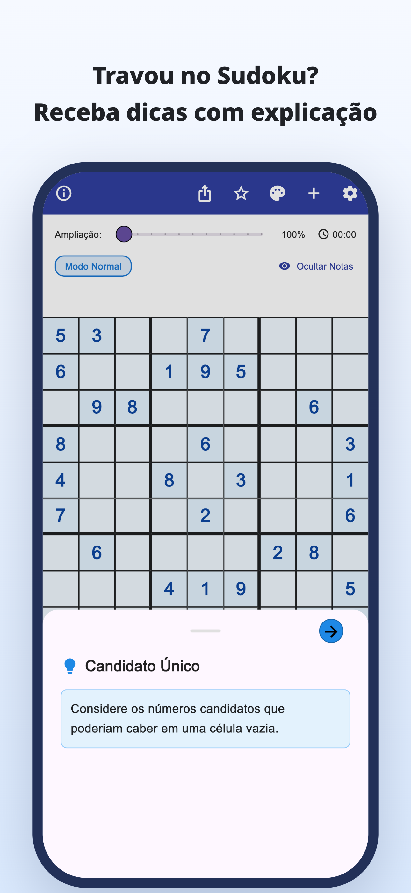
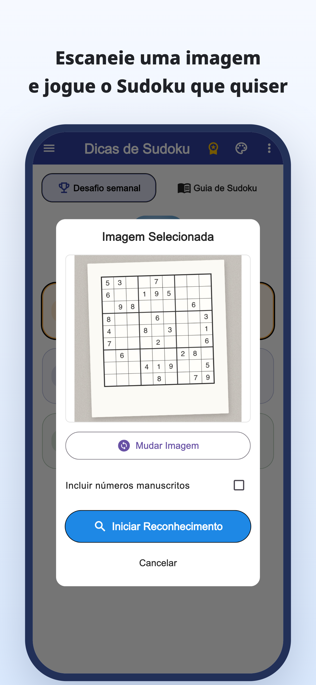
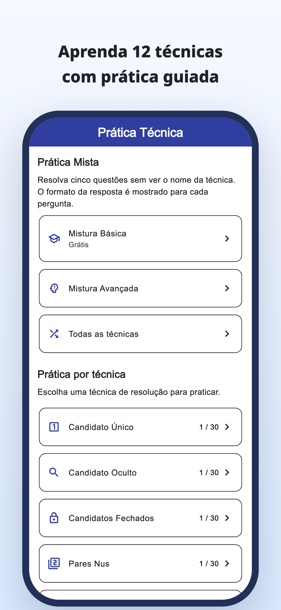
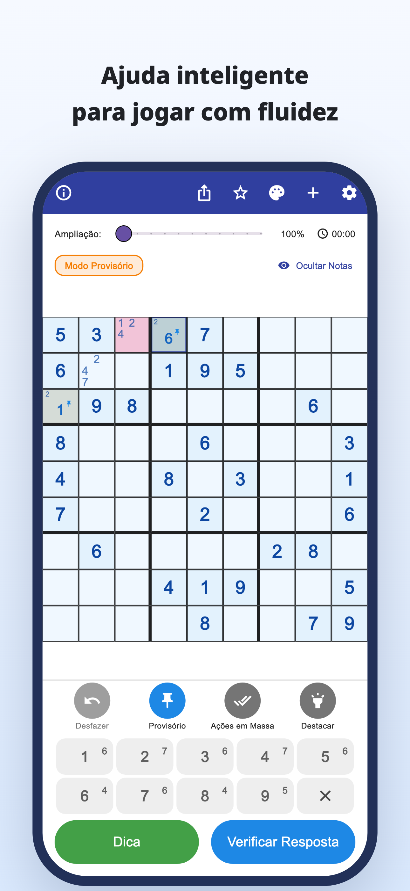
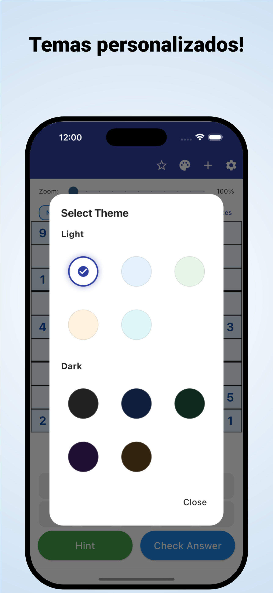

“Onde devo olhar agora?”
Você confere a grade várias vezes,
mas continua preso no mesmo ponto.
Leia com a câmera · Dicas com explicação
Leia sudokus de jornais e revistas com a câmera.
Entenda por que um número se encaixa e continue resolvendo por conta própria.
iPhone e Android / Download grátis · Compras no app





Isso acontece quando você joga?
Você confere a grade várias vezes,
mas continua preso no mesmo ponto.
Por que esse número vai nessa casa?
Copiar a solução não é suficiente.
Você quer pegar o sudoku em papel que está resolvendo
e continuar no app.
Transforme um bloqueio em uma pista
Leia um sudoku de jornal ou revista a partir de uma foto e reduza a digitação de cada número.
Leitura de imagemVeja o raciocínio de uma jogada e use-o para pensar no próximo passo, em vez de apenas preencher a resposta.
Dicas com explicaçãoExplore explicações e exercícios de cada técnica e pratique reconhecê-las por conta própria.
Prática por técnicaPara quem gosta de encontrar a própria solução
Importe sua grade habitual e continue de onde parou.
Entenda o ponto difícil e siga resolvendo por conta própria.
Para iniciantes e quem quer aprender mais uma técnica.
Leia · Experimente · Pratique
Comece pelo navegador.
Leia um guia ou jogue um sudoku completo.
Das notas de candidatos às técnicas e aos exercícios.
Tente completar uma grade com dicas quando precisar.
Conheça as regras e a diversão de conectar as pistas.
Observe a casa com borda azul e abra a dica.
Dica para a próxima jogada
Confira os candidatos de uma célula vazia.
Este exemplo web permite experimentar uma jogada. A apresentação do app é diferente.
Quando o sudoku travar.
Baixar Dicas de Sudoku
Download grátis · Compras no app
O download e a experimentação são gratuitos. Dicas, verificações e leituras de imagens têm limites; alguns usos exigem assistir a um anúncio em vídeo.
Premium é uma assinatura mensal ou anual. Remove anúncios e inclui dicas e verificações ilimitadas. A leitura de imagens continua limitada mesmo com Premium. Veja os preços e condições no app.
Importe uma foto do sudoku. Confira os números reconhecidos e corrija possíveis erros antes de começar. São aceitos sudokus tradicionais de 9×9.
Você pode jogar as grades incluídas e usar explicações e exercícios por técnica. Algumas grades e exercícios exigem Premium.
Além desta demonstração de uma jogada, você pode jogar um sudoku completo no navegador e explorar guias e exercícios.
Guia de sudoku